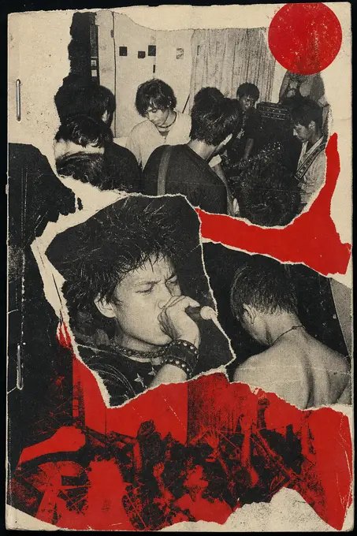
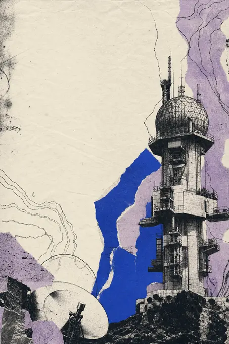

PUNK / CERITA DARI SAMPING

KETERANGAN SAMPUL TERCATAT DI ARSIPKATALOG / ZINEEKSPERIMEN / ARSIP BUNYI
ENTRI TERVERIFIKASIEntri zine yang menekankan hubungan halaman cetak dengan artis, gig, dan rilisan di arsip.
01 / KATALOGNOMOR YANG TERCATAT
02 / HAKBATASAN REPRODUKSI
Reproduksi zine memerlukan izin pemegang hak masing-masing. Katalog menyimpan metadata; pindaian halaman dalam hanya tayang dengan izin tercatat.
Katalog menyimpan metadata (nomor, tahun, halaman, daftar isi). Setiap halaman memerlukan izin dan kredit yang jelas.
03 / LAINNYAKATALOG ARSIP